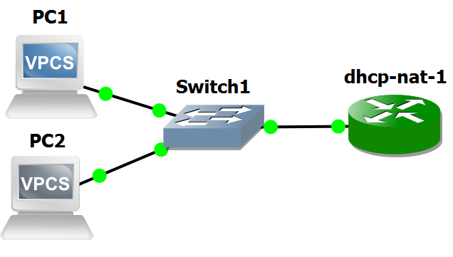
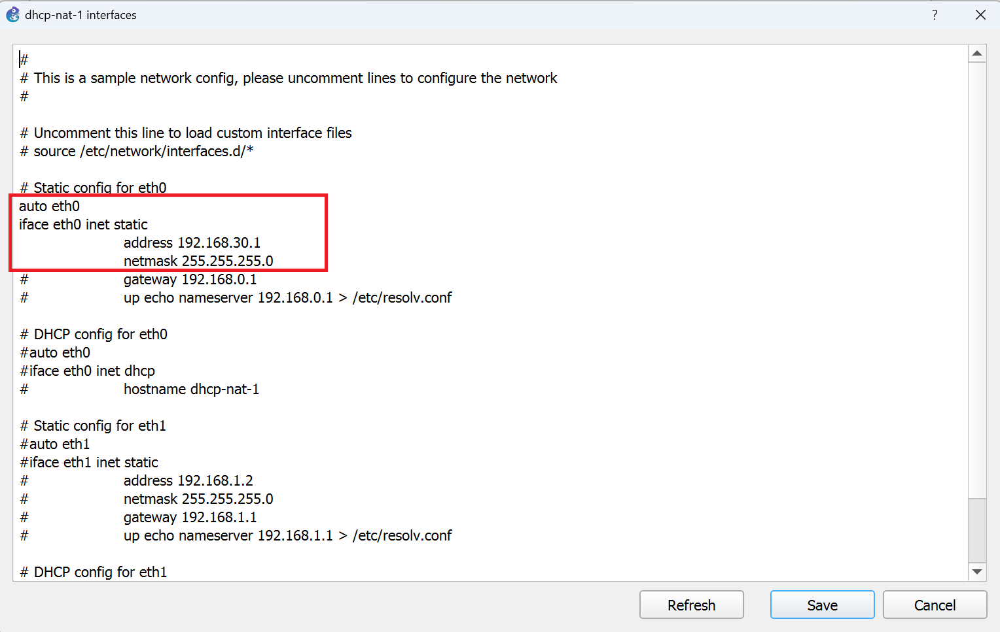
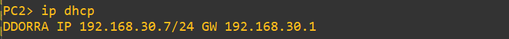
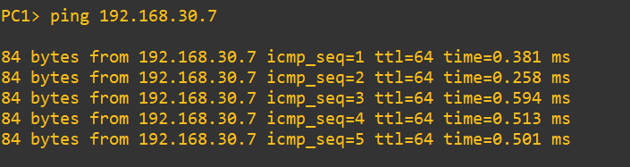
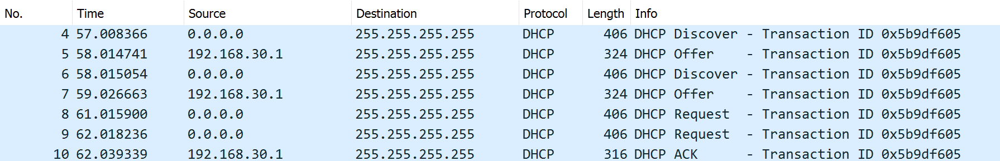

Lab #4
Two hosts and a DHCP server
The purpose of this lab is to show how IP addresses can be assigned to end-systems by means of a DHCP server.
NOTICE: this lab requires the GNS3 VM to instantiate a Docker container of a Linux-based DHCP server.
Preparation steps
The procedure described here will be executed only once. Its purpose is to give GNS3 the ability to instantiate a Docker container of a Linux-based DHCP server. This component will be also used in further labs. This preparation step, however, will not be repeated.
- In GNS3 go to Edit/Preferences... and select Docker container templates from the panel on the left of the Preferences window.
- Click on New.
- Select the Run this Docker container on the GNS3 VM option and press Next.
- Choose the New image action.
- Type rcanonico/alpine-dhcp-server:latest in the Image name textbox and press Next.
- Change the template name in dhcp-nat and press Next.
- Specify 2 as the number of adapters you want this container to use and click Next.
- Specify /bin/sh as the Start command textbox and click Next.
- Leave the console type set to telnet and click Next.
- Specify the following environment variables in the Environment textbox and click Next.
ETH0_IP=192.168.30.1
ETH0_SUBNET=192.168.30.0
ETH0_NETMASK=255.255.255.0
LAN_IFACE=eth0
WAN_IFACE=eth1
- Click Finish to complete this configuration process. dhcp-nat will now appear in the list of available Docker container templates.
- In the Preferences window, select dhcp-nat from the list of available Docker container templates and click Edit.
- In the Docker container template configuration window that appears, choose the Routers category.
- In the same window, choose the Browse... button, select the router symbol from the Classic set of icons and press OK.
- Press OK to close the Docker container template configuration window.
Notice that the first time that the dhcp-nat component will be added to a GNS3 project, the Docker container image will be pulled from Docker Hub repository. This will require a few seconds.
Experiment steps
- Recreate the following topology in GNS3. Choose the "GNS3 VM" server to instantiate all the devices of this lab.

- When the devices are still inactive, right-click on the dhcp-nat-1 icon and select the Configure option.
- Press Edit to modify the router's network configuration.
- Modify the router's interfaces configuration as illustrated in the following picture.

- Start all devices.
- Open dhcp-nat-1 terminal and execute the start.sh script with the command:
./start.sh

- Start capture on link connecting Switch1 to dhcp-nat-1.
- Open PC1 terminal and execute the following command to configure PC1's NIC with an IP address obtained via DHCP:
ip dhcp
A sequence of DHCP messages (Discover, Offer, Request, Ack) is exchanged between PC1 and the DHCP server until an IP address (e.g. 192.168.30.6) is assigned to PC1.

- Open PC2 terminal and execute the following command to configure PC2's NIC with an IP address obtained via DHCP:
ip dhcp
A sequence of DHCP messages (Discover, Offer, Request, Ack) is exchanged between PC2 and the DHCP server until an IP address (e.g. 192.168.30.7) is assigned to PC2.

- In PC1 terminal execute the command to ping PC2:
ping 192.168.30.7
and verify that answers are received.

Packet capture analysis
The picture below shows the packets captured by Wireshark running on the link connecting Switch1 to dhcp-nat-1 during DHCP sequence.

Return to list of labs
Copyright (c) 2024 - Roberto Canonico
Last updated: October 3, 2024 by Roberto Canonico